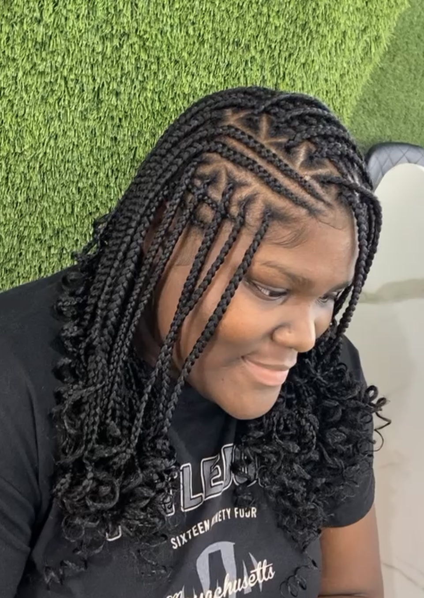

Cornrows
Cornrows are a traditional hairstyle where the hair is braided closely to the scalp in neat, straight, or curved rows. This style has deep cultural roots and can be worn in a variety of patterns and designs. Cornrows are a protective style that helps maintain natural hair health while offering a versatile and low-maintenance look. This style can be achieved with or without the use of hair extensions.
Here are some key features of Cornrows:
- Protective hairstyle: Cornrows are a protective style that helps shield the hair from environmental stressors and manipulation. The hair is kept close to the scalp, reducing the need for daily styling, which can help prevent breakage and promote hair growth.
- Longevity: Cornrows can last between 2 to 8 weeks, depending on how well they are maintained. Regular moisturizing of the scalp and hair helps prolong the style and keeps the hair healthy.
- Low Maintenance: Once installed, cornrows require minimal upkeep. Keeping the scalp moisturized and washing the braids gently will help maintain the style. A silk or satin scarf or bonnet is often worn at night to protect the braids and prevent frizzing.
- Long-Lasting: With proper care, knotless braids can last several weeks, typically 4 to 8 weeks, though the duration depends on factors like hair growth and maintenance.
-
Versatility: There are a Variety of Add-on's that can be included with cornrows. Here are some options I offer
- Boho: Addition of curly hair extensions to achieve a carefree, bohemian, or beachy look.
- Hot water curls: Use of curl rods and hot water to create curls at the end of the braids.
- Beads: Addition of beads, and securing them by using rubber bands or buring the ends of extensions.
- Versatile Patterns: Geometric patterns,zig-zags,hearts, swrirls, and other creative designs.
In summary, cornrows are a timeless and versatile hairstyle that involves braiding the hair closely to the scalp in neat rows or patterns. As a protective style, they help maintain natural hair health while offering a range of styling possibilities. Cornrows are also deeply rooted in cultural heritage, symbolizing identity, pride, and artistic expression.